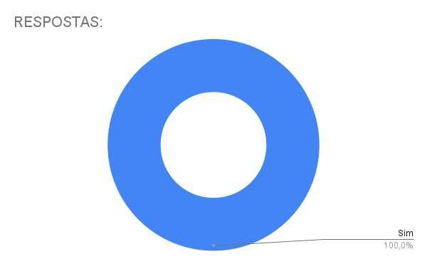

Apresentação 1
Introdução
Este documento contem a gravação da primeira entrega do projeto da disciplina Interação Humano , bem como os principais aspectos avaliados nesta etapa do desenvolvimento.
Entrega 01
Nesta primeira entrega do projeto estão contidos os seguintes pontos:
- Planejamento do Projeto;
- Equipe;
- Lista de sites avaliados;
- Site selecionado para o projeto da disciplina;
- Ferramentas do projeto;
- Processo de Design;
- cronograma das atividades;
- Atas das reuniões;
- Gravação da apresentação.
Link para a apresentação
Vídeo 1 - Apresentação da entrega 1.
Link: Apresentação
Aspectos avaliados
Tabela 1 - Aspectos avaliados na entrega 1.
| O github pages possui: | Resposta | Versão, data e horário da avaliação | |
|---|---|---|---|
| Itens do Planejamento Geral do projeto. | 1 – Uma página apresentando os integrantes da equipe (com foto) com nome e sem matrícula? | Sim | 1.1, 12/11/2024, 21:45 |
| 2 - o cronograma do planejamento apresenta todas as atividades de todas as etapas para cada integrante com as datas de início e fim das entrega dos artefatos e com o período da revisão deles? | Sim | 1.2, 12/11/2024, 21:46 | |
| 3 - o cronograma do planejamento apresenta um período de gravação da apresentação de cada etapa. | Sim | 1.2, 12/11/2024, 21:47 | |
| 4 - O cronograma prever um período de revisão/ajustes nos artefatos devidos as considerações dos monitores/professor? | Sim | 1.2, 12/11/2024, 21:56 | |
| 5 - A motivação e os critérios para a escolha do site? | Sim | 1.0, 12/11/2024, 21:52 | |
| 6 - O planejamento e avaliação dos sites selecionados? | Sim | 1.0, 12/11/2024, 21:53 | |
| 7 - Possui opção de contraste de cores? | Sim | 1.1, 12/11/2024, 21:54 | |
| 8 – Os artefatos: Planejamento do Projeto, equipe, lista de sites avaliados, site selecionado para o projeto da disciplina, Ferramentas do projeto, Processo de Design, cronograma das atividades? | Sim | 1.0, 12/11/2024, 21:55 | |
| Itens do Desenvolvimento do projeto. | 1 - O histórico de versão padronizado? | Sim | 1.0, 12/11/2024, 21:55 |
| 2 – O(s) autor(es) e o(s) revisor(es) para cada artefato? | Sim | 1.0, 12/11/2024, 21:58 | |
| 3 - Referências bibliográficas e/ou bibliografia em todos os artefatos? | Sim | 1.0, 12/11/2024, 22:20 | |
| 4 - As tabelas e imagens possuem legenda e fonte e elas chamadas dentro dos texto? | Sim | 1.0, 12/11/2024, 21:59 | |
| 5 - Um texto fazendo uma introdução dos artefatos? | Sim | 1.0, 12/11/2024, 22:00 | |
| 6 - o cronograma executado com quem realizou cada artefato/atividade com as datas de início e fim da construção/realização do artefato/atividade. | Sim | 1.0, 12/11/2024, | |
| 7 - Ata(s) da(s) reuniões (com data, horário de início e do final, participantes, objetivo,atividades definidas etc). | Sim | 1.0, 12/11/2024, 22:03 | |
| 8 – A gravação da reunião do grupo. | Sim | 1.0, 12/11/2024, 22:32 | |
| 9 - Vídeo de apresentação na categoria “não listado” no youtube? | Sim | 1.0, 12/11/2024, 22:03 | |
| Itens do conteúdo da disciplina | A justificativa da escolha do Processo de Design? Mayhew | Sim | 1.0, 12/11/2024, 22:47 |
{kind=link}
Autor(es): Ruan Carvalho, 2024.
Vídeo de autoavaliação
Link: Autoavaliação
Figura 1 - Gráfico das respostas avaliadas na entrega 1

Bibliografia
SILVA, André Barros. Plano de Ensino - FIHC 022024 Turma 01 v1. Interação Humano Computador, 2° semestre de 2024. Disponível em: Plano de Ensino.
Histórico de Versões
Tabela 2 - Histórico de versões.
| Versão | Descrição | Autor(es) | Data | Revisor(es) | Data de revisão |
|---|---|---|---|---|---|
| 1.0 | criação do arquivo | Ruan Carvalho | 12/11/2024 | Marcelo Adrian | 12/11/2024 |
| 1.1 | Revisão da auto avaliação | Marcelo Adrian | 24/11/2024 | Felipe Rodrigues | 24/11/2024 |
| 1.2 | Padronização de Referências Bibliográficas, Bibliografia e Autor(es) | Felipe Rodrigues | 23/11/2024 | Marcelo Adrian | 24/11/2024 |